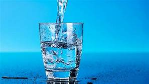

Balanço Hídrico

Qtde. de Liquido Inserida: {{dadosBalanco?.qtdIngerida}} ml
Qtde. de Liquido Eliminada: {{dadosBalanco?.qtdEliminada}} ml
Balanço: {{dadosBalanco?.qtdIngerida - dadosBalanco?.qtdEliminada}} ml
Ultima Informação:{{dadosBalanco?.dataControle}}
Balanço Hidrico